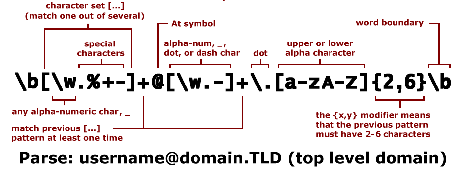
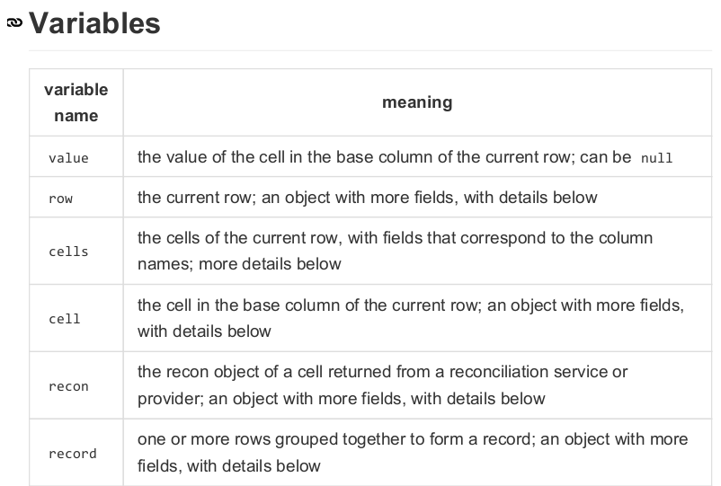
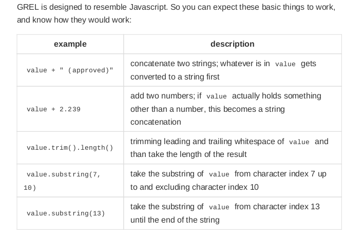
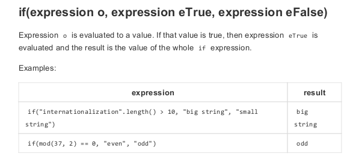
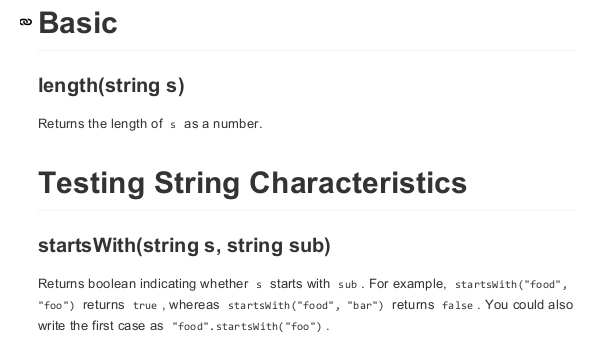
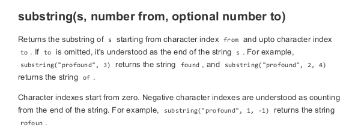

Who here knows what a regular expression is?
Download this PDF
Originally found here
We will have a look at some basic stuff you can do with GREL. Think of them as the same features/formulas that Excel uses.





Let us go back to the original example we looked at to start off everything: How can we make a GREL statement that will:
- add leading zeros if the ISSN was truncated to 6 characters long
- add a hyphen into an 8 character ISSN?
hint Edit Cells -> Transform
GREL will manipulate the data in many different ways:
- math functions (such as min, max)
- compare dates
- Parse HTML